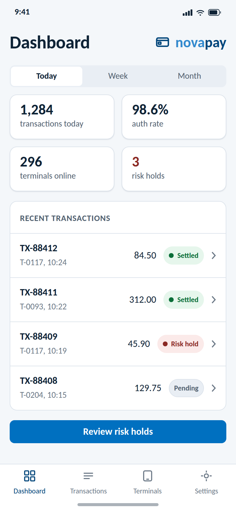
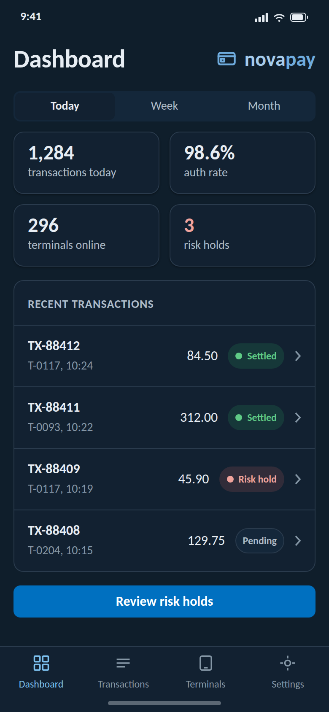

The Novus design system mapped onto native iOS: SwiftUI under the Human
Interface Guidelines, the platform's standard stack. Every value is taken
from tokens.css (rem converts at 16px per rem to pt), and the build
rejects any colour on this page that is not a token value.
The target, before any code: a novapay operations dashboard on the mapping
below, light and dark. These are reference renderings drawn entirely from
tokens.css (the kit's own classes at device width), not device
screenshots; the starter view further down reproduces them natively.


The prototype is the mapping made tappable: four screens with the large title following the tab, a working segmented control (Today, Week, Month), transaction filter chips, and the persisted theme toggle in Settings; navigation on native radio inputs so it works with JavaScript off.
Define each semantic colour once with both appearances; the system switches them with the appearance, exactly like the web tokens' dark block.
import SwiftUI
extension Color {
static func novus(_ light: UInt32, _ dark: UInt32) -> Color {
Color(UIColor { $0.userInterfaceStyle == .dark
? UIColor(rgb: dark) : UIColor(rgb: light) })
}
// token: light hex, dark hex
static let novusBg = novus(0xFFFFFF, 0x0B1620) // --bg
static let novusSurface = novus(0xFFFFFF, 0x122131) // --surface
static let novusSurfaceRaised = novus(0xF4F7FA, 0x18293B) // --bg-subtle / --surface-raised
static let novusText = novus(0x0E2336, 0xE7EDF3) // --text
static let novusTextSecondary = novus(0x51606F, 0xAEBCC9) // --text-secondary
static let novusTextMuted = novus(0x6B7886, 0x8597A6) // --text-muted
static let novusBorder = novus(0xDCE3EB, 0x2A3B4D) // --border
static let novusAccent = novus(0x0070C0, 0x0070C0) // --accent (holds in dark)
static let novusAccentText = novus(0x00457A, 0x7CC0EE) // --accent-text
static let novusSuccess = novus(0x00A04A, 0x2BB266) // --success (judgements only)
static let novusWarning = novus(0xE8A300, 0xE8A300) // --warning (judgements only)
static let novusDanger = novus(0xC0473F, 0xD56A61) // --danger (risk always red)
}
extension UIColor {
convenience init(rgb: UInt32) {
self.init(red: CGFloat((rgb >> 16) & 0xFF) / 255,
green: CGFloat((rgb >> 8) & 0xFF) / 255,
blue: CGFloat(rgb & 0xFF) / 255, alpha: 1)
}
}Bundle Carlito 400 and 700 in the app (TTF from the design system master or
Google Fonts; this npm package ships woff2 for the web only), register both in
UIAppFonts, then map the kit scale with Dynamic Type support.
extension Font {
// rem times 16 = pt, relative styles keep Dynamic Type scaling
static let novus2xl = Font.custom("Carlito-Bold", size: 30, relativeTo: .largeTitle) // --text-2xl
static let novusXl = Font.custom("Carlito-Bold", size: 24, relativeTo: .title) // --text-xl
static let novusLg = Font.custom("Carlito-Bold", size: 20, relativeTo: .title3) // --text-lg
static let novusMd = Font.custom("Carlito-Bold", size: 18, relativeTo: .headline) // --text-md
static let novusBase = Font.custom("Carlito-Regular", size: 16, relativeTo: .body) // --text-base
static let novusSm = Font.custom("Carlito-Regular", size: 14, relativeTo: .subheadline)// --text-sm
static let novusXs = Font.custom("Carlito-Regular", size: 12, relativeTo: .caption) // --text-xs
}enum NovusSpace { // --space-1 .. --space-8
static let s1: CGFloat = 4; static let s2: CGFloat = 8
static let s3: CGFloat = 12; static let s4: CGFloat = 16
static let s5: CGFloat = 24; static let s6: CGFloat = 32
static let s7: CGFloat = 48; static let s8: CGFloat = 64
}
enum NovusRadius { // --radius-sm/md/lg/xl
static let sm: CGFloat = 6; static let md: CGFloat = 8
static let lg: CGFloat = 12; static let xl: CGFloat = 16
}@main struct NovusApp: App {
@AppStorage("novus-theme") private var theme = "system"
var body: some Scene {
WindowGroup {
RootView()
.preferredColorScheme(
theme == "light" ? .light :
theme == "dark" ? .dark : nil) // nil = follow the system
}
}
}nil follows the system appearance; the persisted override is the second trigger, matching the web kit's novus-theme.js behaviour (same storage key, even).Wrap the kit's component forms as view modifiers once, so screens stay declarative and on-brand:
struct NovusCard: ViewModifier {
func body(content: Content) -> some View {
content
.padding(NovusSpace.s4)
.background(Color.novusSurface)
.clipShape(RoundedRectangle(cornerRadius: NovusRadius.lg))
.overlay(RoundedRectangle(cornerRadius: NovusRadius.lg)
.stroke(Color.novusBorder, lineWidth: 1)) // border over shadow
}
}
struct NovusChip: View { // self-describing judgement chip
let label: String
var tone: Color = .novusTextSecondary // judgement colours only on judgements
var body: some View {
HStack(spacing: NovusSpace.s1) {
Circle().fill(tone).frame(width: 6, height: 6)
Text(label).font(.novusSm)
}
.padding(.horizontal, NovusSpace.s3).padding(.vertical, NovusSpace.s1)
.background(Capsule().stroke(Color.novusBorder, lineWidth: 1))
}
}
extension View { func novusCard() -> some View { modifier(NovusCard()) } }struct DashboardView: View {
var body: some View {
NavigationStack {
ScrollView {
VStack(spacing: NovusSpace.s4) {
LazyVGrid(columns: [GridItem(.flexible()), GridItem(.flexible())],
spacing: NovusSpace.s3) {
Kpi(value: "1,284", label: "transactions today")
Kpi(value: "98.6%", label: "auth rate")
Kpi(value: "296", label: "terminals online")
Kpi(value: "3", label: "risk holds", tone: .novusDanger)
}
VStack(spacing: 0) {
Row(id: "TX-88412", sub: "T-0117, 10:24", amt: "84.50",
chip: NovusChip(label: "Settled", tone: .novusSuccess))
Row(id: "TX-88409", sub: "T-0117, 10:19", amt: "45.90",
chip: NovusChip(label: "Risk hold", tone: .novusDanger))
}.novusCard()
Button("Review risk holds") {}
.buttonStyle(.borderedProminent)
.tint(.novusAccent) // the one accent on this view
}
.padding(NovusSpace.s4)
}
.background(Color.novusBg)
.navigationTitle("Dashboard")
}
}
}
private struct Kpi: View {
let value: String; let label: String; var tone: Color = .novusText
var body: some View {
VStack(alignment: .leading, spacing: NovusSpace.s1) {
Text(value).font(.novusXl).foregroundStyle(tone)
Text(label).font(.novusSm).foregroundStyle(Color.novusTextSecondary)
}
.frame(maxWidth: .infinity, alignment: .leading)
.novusCard()
}
}
private struct Row<Chip: View>: View {
let id: String; let sub: String; let amt: String; let chip: Chip
var body: some View {
HStack(spacing: NovusSpace.s3) {
VStack(alignment: .leading) {
Text(id).font(.novusBase).fontWeight(.bold)
Text(sub).font(.novusSm).foregroundStyle(Color.novusTextMuted)
}
Spacer()
Text(amt).monospacedDigit() // amounts stay neutral
chip
}
.padding(.vertical, NovusSpace.s3)
}
}| Kit component | SwiftUI equivalent | Notes |
|---|---|---|
| .btn --primary | Button + .borderedProminent tint novusAccent | One per screen (one accent per view) |
| .btn --secondary | Button + .bordered | Outline look, no tonal fill |
| .btn --ghost | Button + .plain | |
| .card | VStack in RoundedRectangle stroke novusBorder | Border over shadow, near-flat |
| .badge / chips | Capsule label | Self-describing text; judgement colours only on judgements |
| .table | List / LazyVStack rows | Dense rows, novusBorder dividers |
| .alert | inline banner / .alert modifier | Risk messages always novusDanger |
| .modal | .sheet / .confirmationDialog | Confirm far-right per Actions & placement |
| .field / .input | TextField + .textFieldStyle(.roundedBorder) | Or a custom style on novusBorder |
| Stepper (progress) | HStack of numbered capsules | Not SwiftUI's numeric Stepper; current step is the only accent |
logos/ (PDF or PNG in the asset catalog), never redrawn, SF Symbols never substitute for a Novus mark.